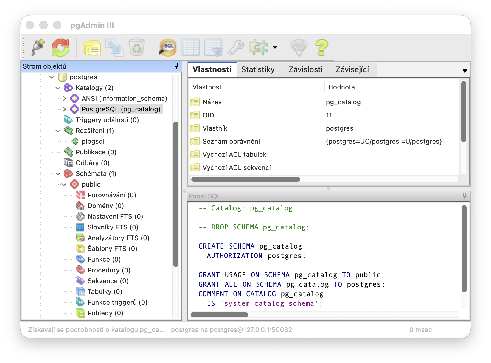

# About
pgAdmin III is the most popular open-source administration and development platform for PostgreSQL. The original project was retired in favor of the web-based pgAdmin 4, but this community fork keeps the native wxWidgets application alive — fixing bugs for modern PostgreSQL versions and adding dozens of new features.
This release introduces a fully native macOS port for Apple Silicon (arm64), distributed as a self-contained .app bundle via Homebrew Cask.
- License: PostgreSQL License (permissive, BSD-like)
- Repository: github.com/heptau/pgadmin3
- Upstream fork: levinsv/pgadmin3 (PostgreSQL 18 support)
- Original project: postgres/pgadmin3 (archived)
# Screenshot

# Key Features
🖥️ Native macOS
A true native app built on wxWidgets 3.3 + Cocoa. No Electron, no Java — low memory footprint, fast startup.
🐘 PostgreSQL 12–18
Full support for modern PostgreSQL versions, PostgresPro Enterprise, Slony-I replication, and pgAgent scheduling.
🔍 SQL Editor
Syntax highlighting, auto-detect statement under cursor, autosaved tabs, multiple result windows, PCRE text transformations.
📊 Query Tool
Named bookmarks, join autocompletion via foreign keys, human-readable large numbers, cell-comparison diff view.
🔄 Schema Tooling
Cross-server object comparison with HTML diff reports, GitLab-backed version control, B-tree index checking via amcheck.
📈 Monitoring
Server Status / Activity window, process highlighting, wait-event sampling (pg_wait_sampling), AWR reports, CSV log viewer.
🎨 SVG Toolbar
Modern SVG toolbar icons, HiDPI / Retina ready, per-server colour coding.
🌐 Localization
11 languages shipped, all with editable .po sources. Czech, Spanish, German, French, Russian, Polish, Chinese and Latvian gaps filled in v2026.07.14.
🔌 Plugins
Extensible via plug-in modules — add custom functionality without modifying the core.
🔐 SSL / SSH
SSL/TLS connection encryption and SSH tunnelling (libssh2) for secure server access.
# Installation
macOS (Apple Silicon) — quickest path
Pre-built binary via Homebrew Cask:
brew install heptau/tap/pgadmin3
Launch from Launchpad, Spotlight, or the terminal:
open /Applications/pgAdmin\ III.app
Build from source (macOS)
git clone https://github.com/heptau/pgadmin3.git cd pgadmin3 make build open "build-macos/pgAdmin III.app"
Note: The first build requires a locally-compiled wxWidgets 3.3 (with --disable-std_containers). The Homebrew bottle is not compatible — see AGENTS.md for details.
Linux
git clone https://github.com/heptau/pgadmin3.git cd pgadmin3 make build ./build/pgAdmin3
Windows
Open pgAdmin3.vcxproj in Visual Studio, or cross-compile from Linux with mingw — see INSTALL_EN.txt.
# What's New
Version v2026.07.14:
- All 11 shipped languages now have editable
.posources - Russian, Polish, Chinese (zh_CN) and Latvian translations — new strings filled in
- Czech, Spanish, German, French localizations fully completed
- Native macOS build (arm64) with Homebrew Cask distribution
- Dark / light mode — live colour scheme switching
- Retina toolbar icons
- PostgreSQL 18 support
- Full changelog: CHANGELOG.md
# Support & Documentation
- Bug reports & feature requests — GitHub Issues
- AGENTS.md — macOS port working notes
- INSTALL_EN.txt — detailed build instructions
- CHANGELOG.md — full change history